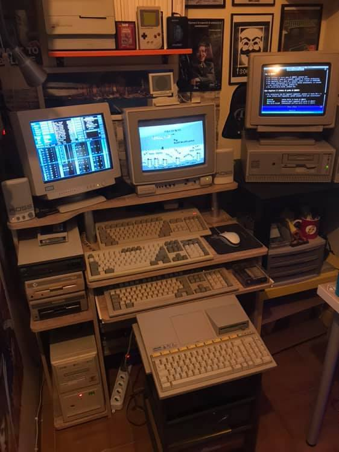

04/01/20 08:50:40 ¶ ● ⬈  koney-scanlines:1 Amiga 500Plus with Color Monitor Commodore1 Olivetti M300 with original Color Monitor1 Pc Intel 486DX2-66 with CRT Color Monitor Siemens1 Olivetti PC1 Prodest (Connect with Commodore Monitor through multi screen adapter)